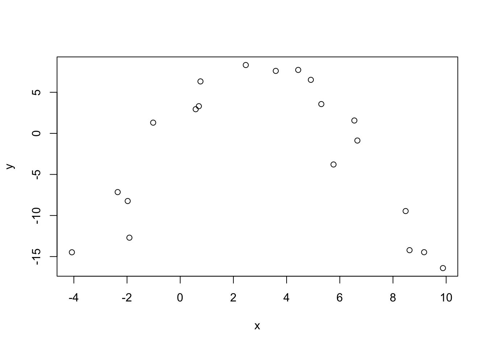
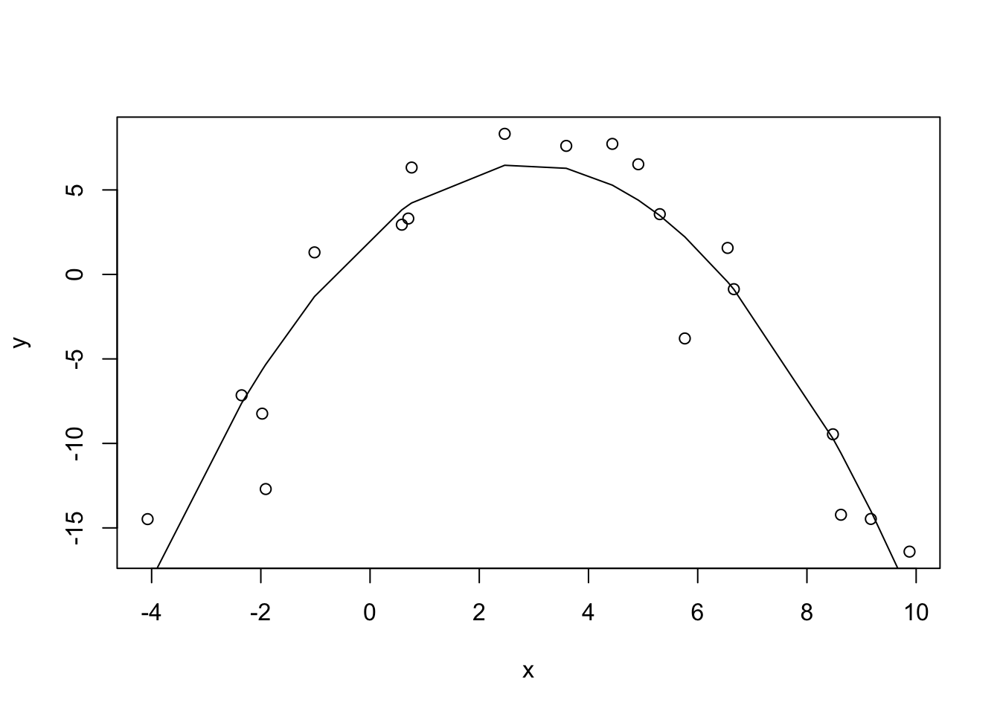
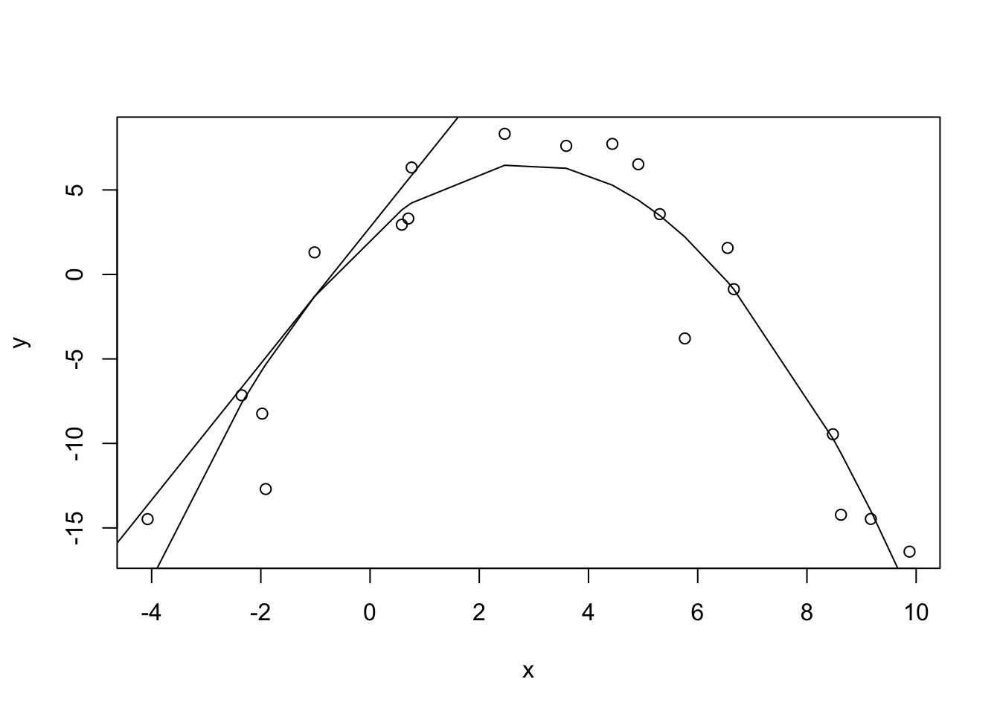
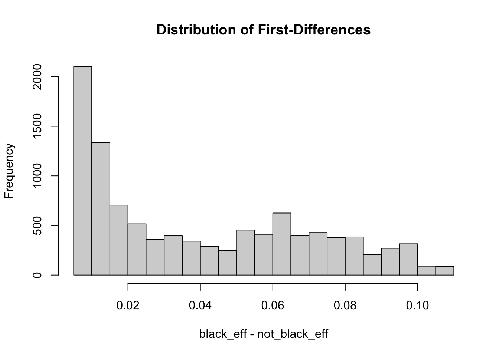

What are average marginal effects? If we unpack the phrase, it looks like we have effects that are marginal to something, all of which we average. So let’s look at each piece of this phrase and see if we can help you get a better handle on this topic.
To begin we simulate some toy data and plot it. Below we use set.seed(1) to ensure you can simulate the same data in case you want to follow along. Next we simulate 20 random values from a uniform distribution ranging from -5 to 10 and sort in ascending order. After that we simulate y as a polynomial function of x and add some random “noise” from a Normal distribution with mean 0 and standard deviation 3. Finally we put the data in a data frame and plot the data. We can see it looks like a parabola. We chose this shape to help us better explain the idea of marginal effects.
library(tidyverse)
── Attaching core tidyverse packages ──────────────────────── tidyverse 2.0.0 ──
✔ dplyr 1.1.2 ✔ readr 2.1.4
✔ forcats 1.0.0 ✔ stringr 1.5.0
✔ ggplot2 3.4.2 ✔ tibble 3.2.1
✔ lubridate 1.9.2 ✔ tidyr 1.3.0
✔ purrr 1.0.1
── Conflicts ────────────────────────────────────────── tidyverse_conflicts() ──
✖ dplyr::filter() masks stats::filter()
✖ dplyr::lag() masks stats::lag()
ℹ Use the conflicted package (<http://conflicted.r-lib.org/>) to force all conflicts to become errors
library(margins)library(emmeans)library(marginaleffects)set.seed(1)x <-sort(runif(20, -5, 10))y <-1.5+3*x -0.5*x^2+rnorm(20, sd =3)d <-data.frame(y = y, x = x)plot(y ~ x, data = d)

Now let’s fit a linear model to the data. This is easy to do since we simulated the data. We know the functional form of the data simulation process so we can fit the “correct” model. Below we model y as a function of x and x^2. We use the I() function to tell R to actually square x. (The ^ symbol has a special meaning in R’s formula syntax.) The summary output reveals that our fitted model coefficients are very close to the “true” values we used to simulate the data.
m <-lm(y ~ x +I(x^2), data = d)summary(m)
Call:
lm(formula = y ~ x + I(x^2), data = d)
Residuals:
Min 1Q Median 3Q Max
-7.372 -0.809 0.359 2.103 4.004
Coefficients:
Estimate Std. Error t value Pr(>|t|)
(Intercept) 2.2596 0.9616 2.35 0.031 *
x 2.9813 0.3286 9.07 0.0000000632 ***
I(x^2) -0.5184 0.0456 -11.37 0.0000000023 ***
---
Signif. codes: 0 '***' 0.001 '**' 0.01 '*' 0.05 '.' 0.1 ' ' 1
Residual standard error: 3.12 on 17 degrees of freedom
Multiple R-squared: 0.885, Adjusted R-squared: 0.872
F-statistic: 65.6 on 2 and 17 DF, p-value: 0.0000000101
And now let’s plot the fitted line to the data.
plot(y ~ x, data = d)lines(x, fitted(m))

To help explain marginal effects, let’s first calculate them for x in our model. For this we’ll use the margins package. You can see below it’s pretty easy to do. Just load the package, call the margins() function on the model, and specify which variable(s) you want to calculate the average marginal effect for.
mfx <-margins(m, variables ="x")summary(mfx)
What are we looking at? What does -0.468 mean? It’s labeled AME, so it’s the average marginal effect. But what does it mean exactly?
To help answer this let’s look at the mfx object we created. It’s a date frame with eight columns and the same number of rows as our data set.
dim(mfx)
[1] 20 8
The names of the columns are as follows:
names(mfx)
[1] "y" "x" "fitted" "se.fitted" "dydx_x"
[6] "Var_dydx_x" "_weights" "_at_number"
The columns “y” and “x” are the original data we simulated. The “fitted” column is the fitted “y” value for the model at “x”. These are the y coordinates in the fitted line in the plot above. The “se.fitted” column is the standard error for the fitted value and quantifies the uncertainty in our fitted values. (We can disregard the “_weights” and “_at_number” columns for this example.)
Now what about the columns with “dydx” in the names? The column “dydx_x” contains the instantaneous effect of “x” on “y”. The “dydx” refers to “derivatives” which you may remember from calculus. We often see “dydx” expressed mathematically as \(\frac{dx}{dy}\). It is usually described as the “instantaneous rate of change of y with respect to x.” The visualization of this idea is to plot the slope of a tangent line at y. The slope of the line might be interpreted as the effect of “x” on “y” at that instant in time.
Let’s look at the first row in mfx. (Notice we have to use as.data.frame() on mfx in order to use indexing brackets. In general that’s not necessary for data frames, but in this case we need it due to a print method that the margins package has for objects produced by the margins() function.)
as.data.frame(mfx)[1,]
The “dydx_x” value of 7.2 is the estimated instantaneous effect of “x” on “y” when “x” is -4.07. 7.2 is the slope of the tangent line passing through the fitted “y” value of -18.48.
We can draw this tangent line in R with a little of bit of extra effort. Instead of the first row, let’s use the fifth so we can easily see the tangent line. To draw this line we need the slope and intercept, the latter of which we can derive from the point-slope formula.
# fifth data pointx5 <- mfx$x[5]# slope of tangent line at 5th data pointb <- mfx$dydx_x[5]# y coordinate of tangent point at 5th data pointy5 <- mfx$fitted[5]# point slope formula# (y - y5) = b(x - x5)# add tangent lineplot(y ~ x, data = d)lines(x, fitted(m))abline(a = b*-x5 + y5, b = b)

The tangent line above shows the instantaneous effect of “x” on “y”. If we slam the breaks on “x” but “y” keeps going, that line represents its trajectory. And notice the line is on the exterior of the fitted line and is thus marginal to the fit. Hence the term “marginal effect”.
So “dydx” is the marginal effect (ie, the slope of the tangent line at the xy coordinate). How was “dydx” calculated? The quick answer is “using differential calculus”. This page has a nice review of basic derivative rules. Here’s how we do it for our toy model.
Our fitted model is
\[
y = 2.25 + 2.98 x - 0.51 x^2
\]
The coefficients are from the model summary above.
Taking the derivative of y with respect to x produces
\[
\frac{dx}{dy} = 2.98 + 2(-0.51) x
\]
So to calculate the “dydx” values we can do the following (showing only the first six values):
We can confirm these match the “dydx” column in the mfx data frame:
head(mfx$dydx_x)
[1] 7.204 5.419 5.029 4.962 4.036 2.378
Now let’s take the average of these “dydx” values.
mean(mfx$dydx_x)
[1] -0.4684
And there it is, our average marginal effect. It is literally the average of the marginal effects. Stated another way, it is the average of the slopes of the tangent lines at 20 different xy coordinates. Is this useful? Probably not in this case. The effect of x changes as itself changes. The average of all these effects doesn’t tell us much. We’re better off just looking at our original plot with the fitted line.
A better approach may be to examine marginal effects at representative values. For example, what if we were interested in the marginal effects at x = -1 and x = 6? We can use the at argument to specify at which x values to calculate the marginal effects. These need to specified as a list object.
mfx2 <-margins(m, variables ="x", at =list(x =c(-1, 6)))summary(mfx2)
Now we have two measures of the effect of “x”. When x = -1, we can imagine a tangent line with a positive slope of about 4. When x = 6, we can imagine a tangent line with a negative slope of about -3.2. The summary output provides 95% confidence intervals on these estimates in the “lower” and “upper” columns.
Now let’s look at marginal effects from another angle, this time in the context of more realistic data. The following data are used in the paper “Using the margins command to estimate and interpret adjusted predictions and marginal effects” by Richard Williams, published in The Stata Journal. It is NHANES data available from the Stata Press web site. We load the haven package so we can import Stata DTA files using the read_dta() function. We also subset the data to get complete cases on six variables of interest. We do this to match what was done in the paper. Notice we use base R’s native pipe to send the output of read_dta() directly into the subset function. We also convert the “black” and “female” variables to factor.
diabetes: does the subject have diabetes? 1 = yes, 0 = no
black: is the subject’s race black? 1 = yes, 0 = no
female: is the subject female? 1 = yes, 0 = no
age: age of the subject in years
Now let’s reproduce some results in the paper. First we model the presence of diabetes as function of “black”, “female”, and “age” using binary logistic regression.
m2 <-glm(diabetes ~ black + female + age, data = nhanes2f, family = binomial)summary(m2)
Call:
glm(formula = diabetes ~ black + female + age, family = binomial,
data = nhanes2f)
Coefficients:
Estimate Std. Error z value Pr(>|z|)
(Intercept) -6.40544 0.23722 -27.00 < 0.0000000000000002 ***
black1 0.71790 0.12681 5.66 0.000000015 ***
female1 0.15456 0.09430 1.64 0.1
age 0.05947 0.00373 15.93 < 0.0000000000000002 ***
---
Signif. codes: 0 '***' 0.001 '**' 0.01 '*' 0.05 '.' 0.1 ' ' 1
(Dispersion parameter for binomial family taken to be 1)
Null deviance: 3998.1 on 10334 degrees of freedom
Residual deviance: 3624.0 on 10331 degrees of freedom
AIC: 3632
Number of Fisher Scoring iterations: 7
Before we get to marginal effects, let’s briefly interpret this model. The Residual deviance, 3624, is much lower than the Null deviance, 3998, which tells us this model is better than an intercept-only model1. Exponentiating the coefficients gives us estimated odds ratios. For example, exponentiating the coefficient for the “black” variable returns exp(0.718) = 2.05. All else being equal, we estimate the odds of “black” subjects having diabetes is about two times higher than those who are not “black”. Likewise, all else being equal, we estimate the odds of developing diabetes increases by about 6% every year as you get older: exp(0.06) = 1.06. The effect of “female” is uncertain.
Now let’s find the average marginal effects of the “black” and “female” predictors. The following reproduces section 6.2 of the paper.
The quick interpretation of the output is that subjects of race “black” have a probability of developing diabetes that is about 2 – 6% higher than those who are “not black”. This comes from the confidence interval reported in the last two columns. Females may have a slightly higher chance of developing diabetes than males, but the confidence interval dips below 0. It’s possible they have a slightly lower chance than males. We’re not sure based on the data.
So how were these marginal effects calculated? Since “black” and “female” are both factor variables they were handled differently than the “x” variable in our toy data above. If a predictor is numeric, then we take the derivative of the response with respect to the numeric predictor as demonstrated above. However if our predictors are factors, then we calculate what are called “first-differences”. This means we calculate the predicted outcome when a factor is set to a given level and then subtract the predicted outcome when the factor is set to its baseline level. We do this for all subjects and take the mean. Let’s demonstrate by doing it “manually”.
First we treat all subjects in the data as if they were “black” and predict the probability of developing diabetes for each person. We save the results into a vector named “black_eff”.
black_eff <-predict(m2,newdata =data.frame(black=factor(1),female=nhanes2f$female,age=nhanes2f$age), type ="response")
Next we treat all subjects as if they were “not black” and predict the probability of developing diabetes for each person. We save these results into a vector named “not_black_eff”.
Finally we calculate the difference in these 10,335 probabilities and take the mean:
mean(black_eff - not_black_eff)
[1] 0.04009
And there we have the average marginal effect. (The same exercise can be done for the “female” predictor which we leave for the interested reader.)
Once again it’s worth asking if this is useful? Williams states in his paper that “averages can obscure differences in effects across cases.” If we look at the summary of the differences we see a fairly large range of effects. As Williams notes, the largest value (0.108) is 20 times bigger than the smallest value (0.006).
summary(black_eff - not_black_eff)
Min. 1st Qu. Median Mean 3rd Qu. Max.
0.00561 0.01125 0.03184 0.04009 0.06484 0.10787
Looking at a histogram of the effects also makes us think twice about using a mean to summarize the data.
hist(black_eff - not_black_eff, main ="Distribution of First-Differences")

As before a better approach may be to examine average marginal effects at representative values. The previously estimated “black” AME of 0.04 was for all ages. It’s probably advisable to break that down for various ages. Williams does so for ages 20 to 70 in steps of 10. Below we reproduce the output from the paper, which is in section 6.3. To set the ages we use the at argument.
mfx4 <-margins(model = m2, variables =c("black", "female"), at =list(age =seq(20,70,10)))summary(mfx4)
Now we get a better sense of how race “black” affects the probability of developing diabetes, according to our model. We see that it increases as age increases. It’s less than 1% at age 20, but over 8% by age 70. This is to be expected given our original model summary. The age effect was large relative to its standard error and positive. But now we have estimated “black” effects at various age levels which is more informative than the model summary by itself.
Also displayed are the various “female” effects, none of which are very big or all that different from 0. This is also not surprising given the model summary. The female coefficient was small and uncertain.
If you ran this last line of code you may have noticed it took a little longer to run. That’s because the “first-differences” were calculated six times. If you look at the dimensions of the mfx4 object you’ll see it has 62,010 rows. The exact same process we demonstrated above is carried out for each age level. Here’s how to replicate the “black1” age 70 average marginal effect “by hand”. This time everyone is set to age 70 in addition to being set to “black” and then “not black”.
This brings up another consideration: treating subjects who reported their race as “black” as if they were “not black”, and vice versa. Or treating all subjects as if they’re age 70. And then treating all subjects as if they’re age 20. Williams briefly mentions that some people “are not convinced” of this approach (p.326). However it’s important to realize this is precisely what happens when you calculate average marginal effects.
If that bothers you, one alternative is estimated marginal means. With marginal means, we use our model to estimate means with predictors set to certain values.2 For example, let’s say we’re interested in how the “black” race level changes the probability of developing diabetes for females at age 70. Previously, using marginal effects, we would set all 10,335 subjects to “black”, “female” and age 70, and then all subjects to “not black”, “female” and age 70, and take the mean difference in predicted probabilities. Now we simply use our model to make two predictions and take the difference. Here’s one way to do that by hand.
There’s an absolute difference of 0.09 in probability of developing diabetes for “black” versus “not black” for age 70 females. Fortunately the emmeans package in R can do this for us and return associated standard errors and confidence intervals. Below we load the emmeans package and then use the emmeans() function on our model. The specs argument specifies which variable we want to estimate multiple “means” for. In this case we want two: one for “black” and one for “not black”. We also specify we want to calculate the probabilities at age = 70 and female = “1”. Finally we set regrid = "response" to ensure predictions are on the “response” scale (ie, probabilities).
emmeans(m2, specs ="black", at =list(age =70, female ="1"),regrid ="response")
This returns the two predicted probabilities for black = “0” and black = “1”. To get the difference in the probabilities we can “pipe” the result into the emmeans function contrast(), and then pipe that result into confint() to get 95% confidence intervals. The argument method = "revpairwise" simply says to calculate the difference in “black” levels as 1 – 0 and instead 0 – 1.
Now we get the estimated difference in probabilities along with a standard error of the difference and a confidence interval. It appears our data is consistent with a “real” difference in probability between 0.05 to 0.13.
We could also calculate the difference in probabilties for males and females by using the by argument as follows:
If we don’t specify “female” in either the by or at arguments, the result is averaged over “female”. In other words we use our model to calculate probability by plugging in the proportion of females in our data. In this case that’s 5426/10,335 = 0.525.
The complication now is that we made estimates for a subject who is 0.525 female. Some might argue that’s not realistic. You’re either female or not. Others might say it’s not relevant since were more interested in the effect of “black” and not a difference in specific predictions. Either way, this is another consideration to be aware of.
Hopefully you now have a better understanding of marginal effects and marginal means. For more information see the vignettes that accompany the margins and emmeans packages.
R Core Team (2021). R: A language and environment for statistical computing. R Foundation for Statistical Computing, Vienna, Austria. URL https://www.R-project.org/.
StataCorp. 2021. Stata 17 Base Reference Manual. College Station, TX: Stata Press.
Richard Williams (2012). Using the margins command to estimate and interpret adjusted predictions and marginal effects. The Stata Journal, 12, Number 2, pp. 308–331.
This doesn’t necessarily mean it’s a good model. It just means it’s better than a model that just has an intercept. An intercept-only model is the same as using the proportion of the dependent variable as your predicted probability. In our data, 0.048 subjects have diabetes. An intercept-only model would predict everyone has a probability of 0.048 of developing diabetes
“Means” in this case is actually more like “expected value”. Out logit model returns predicted probabilities, not means. But the probabilities are based on “mean” log odds (ie, logit).↩︎